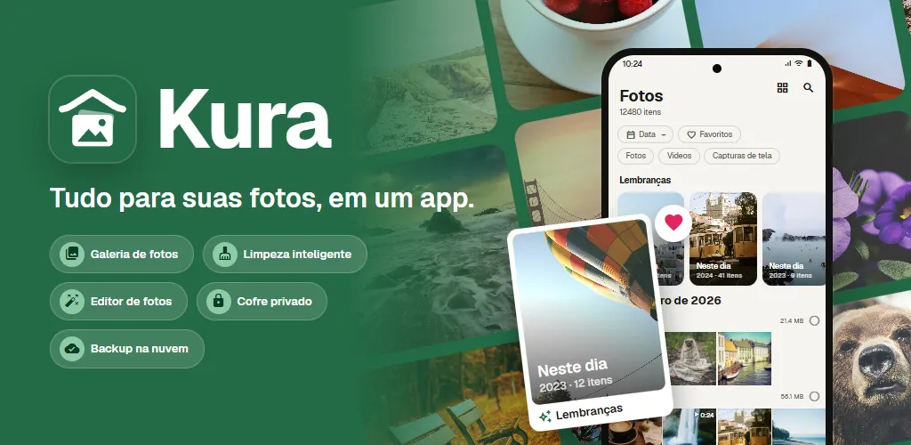
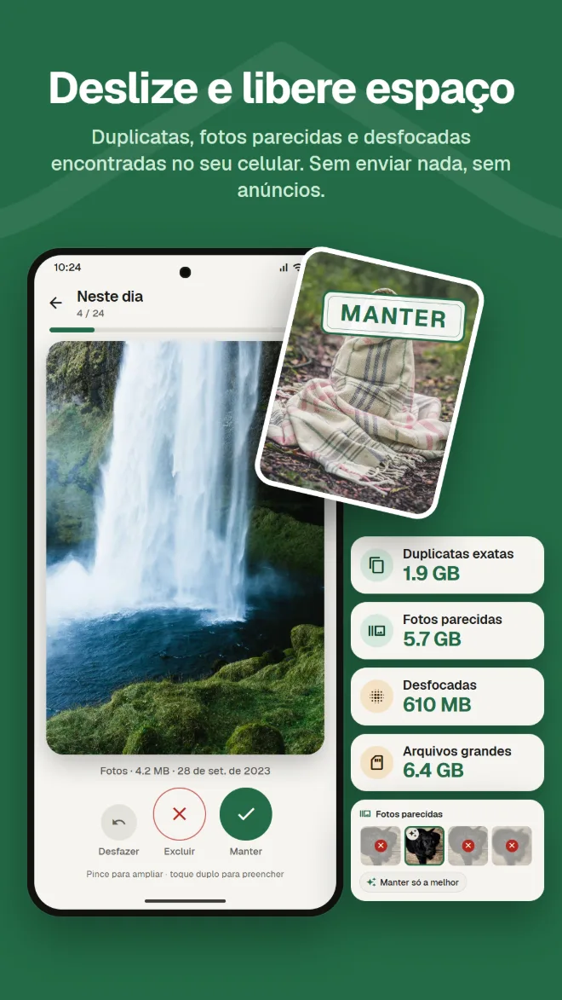
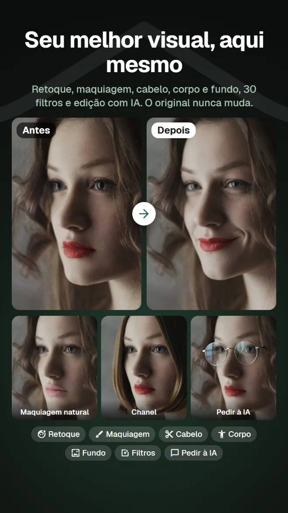
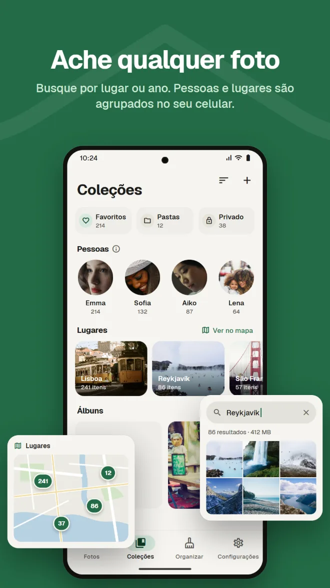
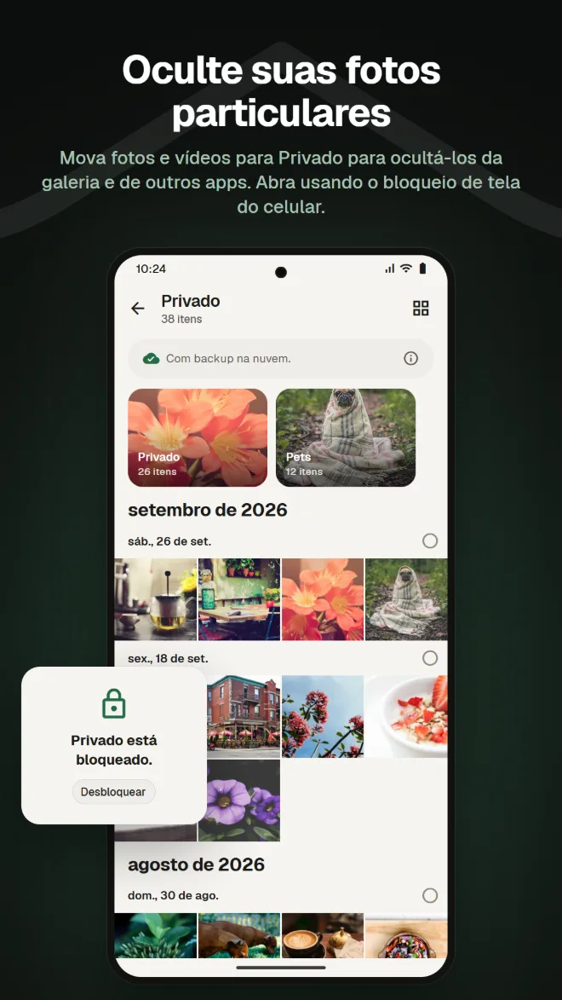
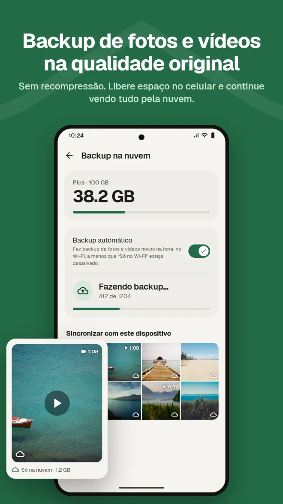
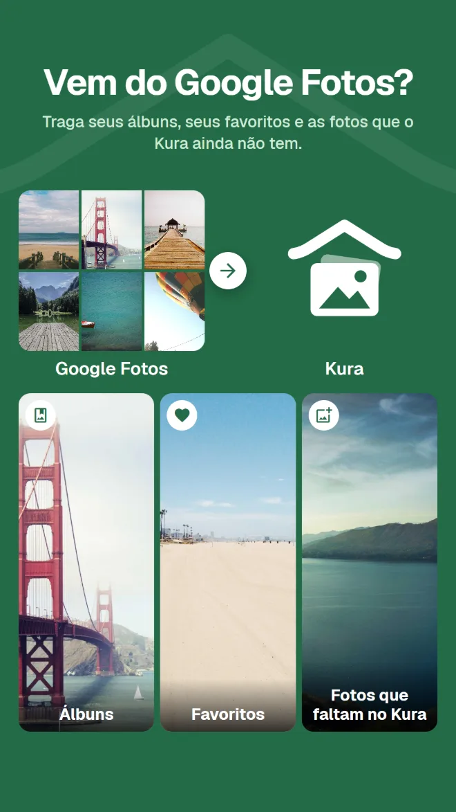

Pesquise o que tem na foto
Encontre fotos por lugar, pelo que aparece nelas ou pelo texto na imagem.
Galeria, limpeza, edição com IA, espaço privado, backup e mudança do Google Fotos. Com o Kura, você não precisa de um app diferente para cada coisa.
Android 11 ou mais recente · Ver, organizar e excluir é grátis · Entre com o Google

Uma galeria para ver, um app de limpeza para liberar espaço, outro app para editar, outro serviço para o backup. A cada troca, você procura a mesma foto de novo.
O Kura faz tudo isso em uma só biblioteca.
Veja, limpe, edite e faça backup das mesmas fotos, no mesmo lugar.
Da biblioteca à limpeza, edição, mudança do Google Fotos e backup.
O Kura encontra duplicatas exatas, fotos parecidas, fotos desfocadas e arquivos grandes no seu celular. Deslize para a direita para manter e para a esquerda para excluir, e veja na hora quanto espaço dá para liberar.

Retoque, formato, maquiagem, cabelo e fundo, além de 30 filtros, ajustes e corte. Tem filtros que deixam a comida apetitosa e ajustes de corpo para a silhueta inteira. Você sempre salva uma cópia, e o original fica como estava.

Uma grade por data, com lembranças do mesmo dia em anos anteriores. Pesquise por lugar, pelo que aparece na foto ou pelo texto dentro dela, e os rostos são agrupados por pessoa no seu celular.

Mova fotos e vídeos para Privado para ocultá-los da galeria e de outros apps. Abra usando o bloqueio de tela do celular.

Backup de fotos e vídeos sem recompressão. Remova do celular as cópias com backup para liberar espaço; elas continuam visíveis na nuvem.

É só enviar o .zip do Google Takeout pelo app ou pelo app web. O Kura traz seus álbuns, seus favoritos e as fotos que ele ainda não tem. O servidor do Kura descompacta tudo em segundo plano, então você pode fechar o app e o navegador.

As fotos da sua nuvem do Kura podem ser vistas, organizadas, limpas, editadas, compartilhadas e enviadas no app web, igual ao app. Os favoritos ficam sincronizados com o app.
Abrir o app webEntre com o Google · Só em inglês e japonês
Tudo o que você espera da galeria que usa todo dia.
Encontre fotos por lugar, pelo que aparece nelas ou pelo texto na imagem.
Rostos agrupados por pessoa no seu celular e suas fotos em um mapa.
Fotos do mesmo dia em anos anteriores, no topo da sua biblioteca.
Ajustes de brilho e cor, corte e pincel, além de filtros para comida.
Adicione data de validade e senha e envie para quem não tem o app.
Confirme com o bloqueio de tela sempre que abrir. Você também pode ocultar Privado.
Instale e suas fotos aparecem, já organizadas.
Baixe no Google Play (Android 11 ou mais recente)
Escolha "Permitir tudo" para carregar toda a sua biblioteca
Entre com sua Conta do Google
Organize na hora; adicione o backup quando precisar
Sem anúncios. Você só paga quando usa a nuvem.
Tudo no seu celular
Cobrança mensal pelo Google Play. Cancele quando quiser
O Google Play mostra os preços na sua moeda local.
As fotos só saem do seu celular quando você faz algo que claramente as envia para algum lugar.
A detecção de duplicatas, desfoque, rostos, objetos e texto roda no seu celular. Nenhuma foto é enviada para ser organizada.
O Android pergunta antes de excluir qualquer arquivo, e o que você exclui fica na lixeira até você esvaziá-la.
Quando você entra, nosso servidor guarda só o ID da sua Conta do Google. Seu nome e seu e-mail nunca são enviados.
A edição com IA envia só a área ao redor do rosto, e nem a foto nem o resultado ficam guardados no servidor.
Sem anúncios · Ver, organizar e excluir é grátis